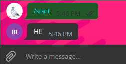

It has been more than a year since a wrote Telegram Bots and Elixir a little guide that shows how to create Telegram bots with Elixir thanks to Telex. But Telex does not exist anymore, since it was updated to the awesome ExGram!
So it is time to see how can we create a Telegram bot using ExGram
First of all, lets create the project with the help of mix, executing in our shell the command mix new nice_bot --sup.
You should see something like this:
We passed the --sup to let mix know that we want an Application module (we will focus on that later).
Now we are going to see two main parts: the mix.exs file and the lib directory.
Your mix.exs file should be very similar to the one above. What we need to do here is modify de deps/0 function to add ExGram as a dependency, this should be simple by adding: {:ex_gram, "~> 0.6"}, {:jason, "~> 1.1"}.
Your deps/0 function should look like this now:
Here is where the coding starts! Lets go to the NiceBot.Application module located in lib/nice_bot/application.ex, you should see something like this:
In this module we are going to initialized ExGram and our bot. But first we need a bot token, we could get one from @BotFather using the /newbot command and following the steps.
We should have a token that looks like this one: 378322483:AAFdz_7lJt69S5HO7ep2GgBqTc36AIo3Ouc
Now we can tell our application to initialize ExGram and our bot module NiceBot.Bot (that we are going to create hereunder)
Create a file in the lib/nice_bot directory called bot.ex, this is where the NiceBot.Bot is going to be. And the module should look like this:
In line 2 we specify the bot name, ExGram allows multiple bots in a single application, so we need a name to differenciate them.
In line 4 we tell ExGram that this module defines message handlers for the :nice_bot.
In line 7 we define a bot/0 function that ExGram needs.
And finally in line 9 we define our first handler.
But what are handlers? They are functions that are executed when a message arrives. Thanks to the awesome pattern matching that Elixir offers we overload the handle/2 function to match different types of messages, we will see an example of this later on.
The handle/2 function receives two parameters: a tuple and a variable called context.
In the first argument we receive processed information about a message. This parameter can be a tuple or a triplet. In this case we have the triplet {:command, "start", _msg}, this handler will be executed when the /start command is sent to the bot. In the third element of the triplet we have the full message specified in the Telegram bot API documentation in case we want to extract extra information from it.
The context variable contains extra information about the full update that arrived to the bot plus some information injected by ExGram, this is also specified in the Telegrab bot API documentation
Finally we answer the /start command with the text "Hi!" to greet our user using the answer/3 macro. It has a third parameter that is optional and that is why we use it with two arguments. This macro only needs the message context and the text to send back.
The only thing we need now is getting our dependencies and running the bot with the following commands:
mix deps.get
mix run --no-halt
And finally lets go to our bot in Telegram and check if this code works by sending /start to the bot.
Nice! Now you know how to set up a Telegram bot with ExGram. If you want to learn some more check out this bots!
Don't forget to star the ExGram repository on Github!